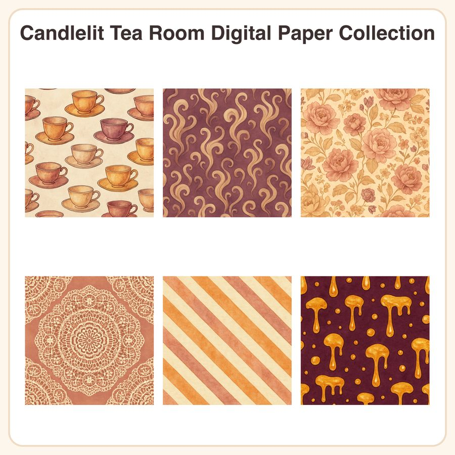

$4.99
View on EtsyCozy up with the warm glow of a candlelit tea room ☕ This digital paper collection brings soft amber light, dusty rose chintz, and vintage tea-house charm to your winter crafting projects — perfect for journals, planner covers, and cozy home decor printables. What's included: • 6 seamless digital paper designs: 1. Scattered hand-painted-style teacups and saucers in warm amber and cream 2. Delicate rising steam swirls over a soft plum background 3. Vintage floral chintz pattern in dusty rose and gold 4. Antique lace doily texture in cream on soft caramel 5. Warm amber and cream candy-stripe with subtle linen texture 6. Honey drizzle dot pattern in gold on deep plum File formats & sizes: • 6 x JPEG files, 3072x3072px (12x12in at 300dpi) • 6 x seamless, tileable PNG files for repeating in design software • All files delivered as an instant digital download (zip file) How to use: Print at home or through a print shop for journal pages, planner covers, gift wrap, scrapbooking, candle labels, and cozy home decor. Import the seamless PNG tiles into Procreate, Canva, Photoshop, or similar apps to fill larger canvases or custom projects. License: For personal and small-business commercial use (up to 500 finished items sold). Please do not resell, share, or redistribute the digital files themselves in original or altered form. A little honesty: these designs were created in our shop with the help of AI tools, then refined and curated by hand for color, texture, and pattern flow. No physical items are shipped — this is a digital download only. Instant download, no waiting for the kettle to boil 🫖